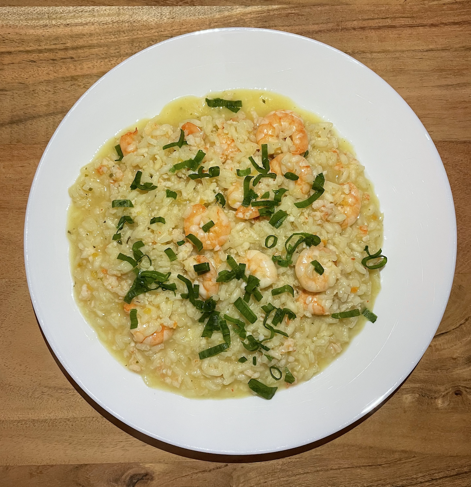

Risotto with Pancetta and Pees
Rice toasted with butter, then deglazed with white wine. The rice is then slowly cooked using vegetable stock, then complemented by crispy bacon and green peas.

Risotto with Shrimps and Lemon
Rice toasted with sautéed onions, then deglazed with white wine. As the rice slowly absorbs flavorful stock shrimps and bright lemon zest are folded in.